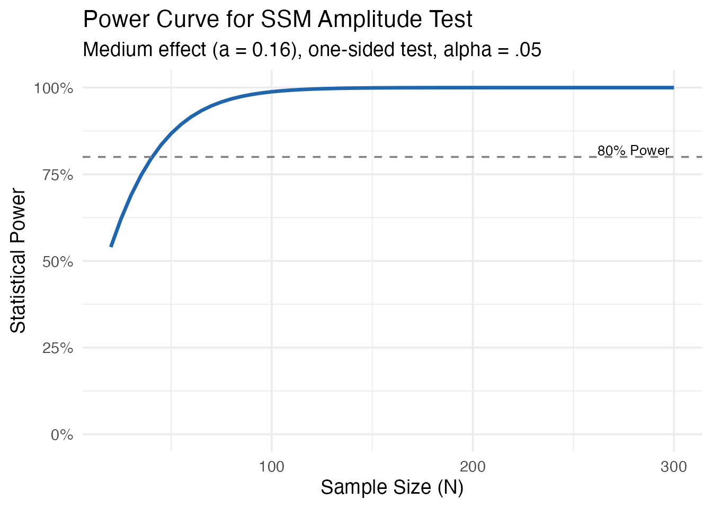
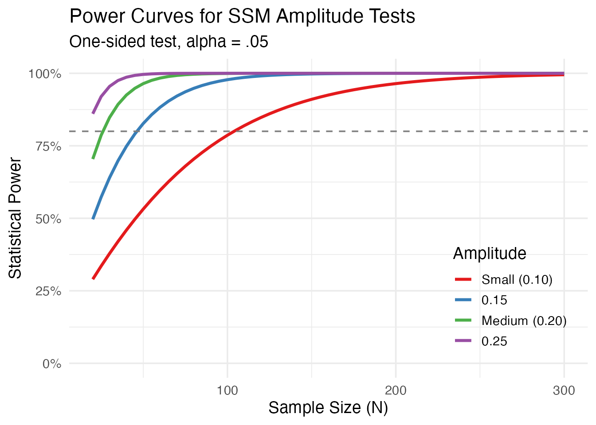
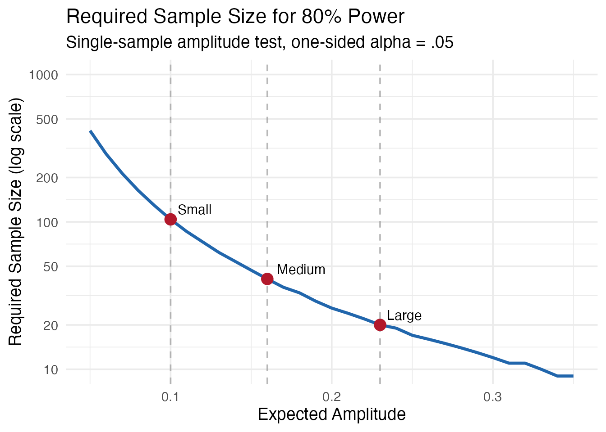
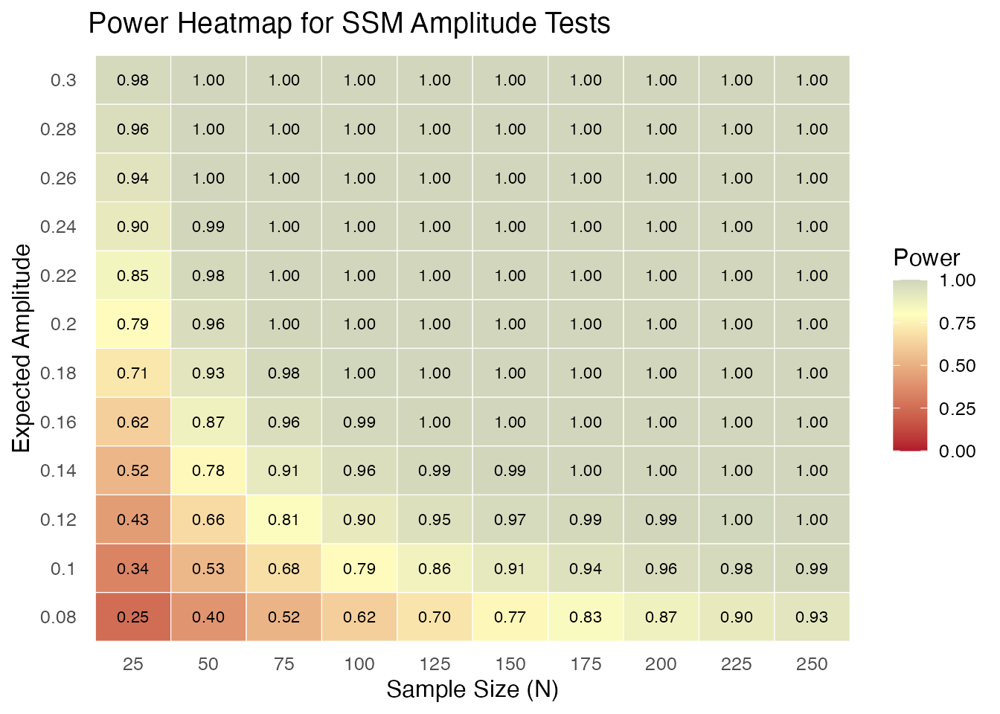
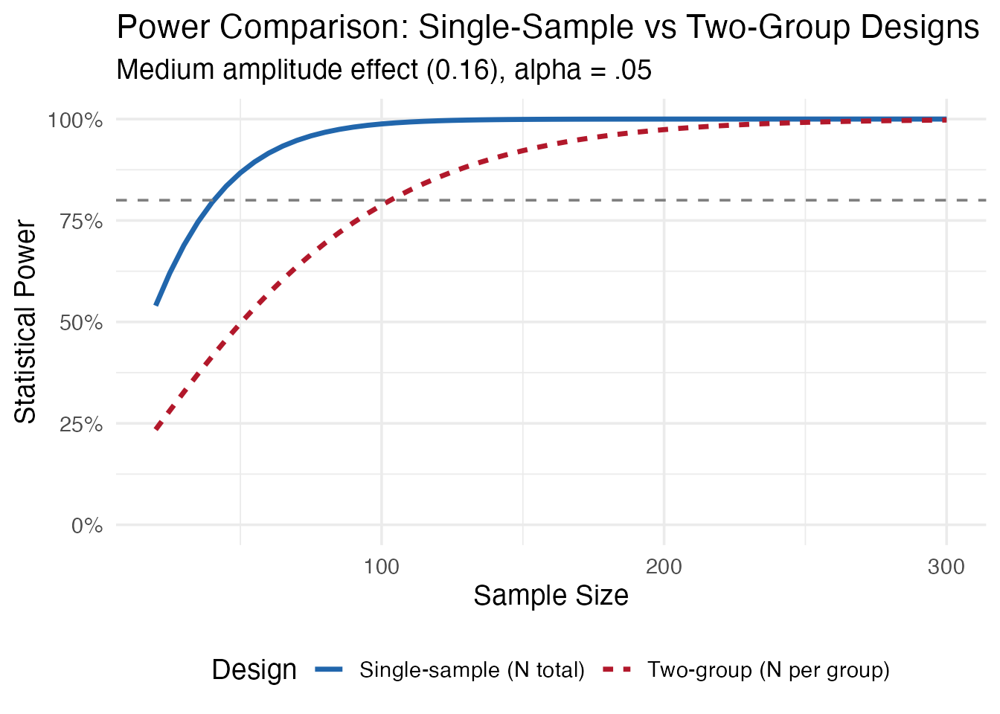
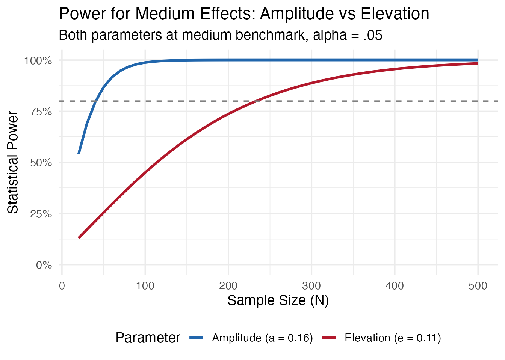
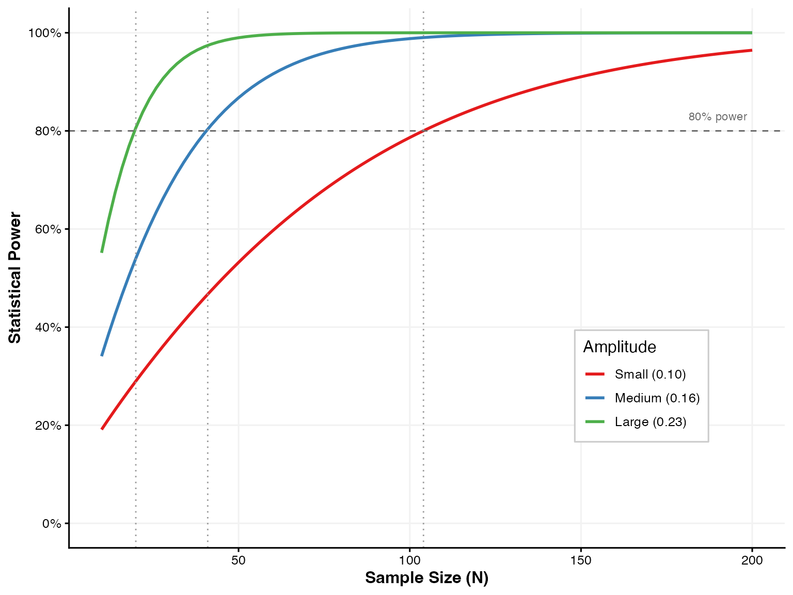

Creating Power Curves and Visualizations
Kimberly Gilbert
Source:vignettes/power-curves.Rmd
power-curves.RmdOverview
This vignette demonstrates how to create publication-quality power curves and visualizations for SSM power analyses. These figures are useful for grant applications, preregistrations, and manuscripts.
Basic Power Curve
A power curve shows how statistical power changes as a function of sample size for a given effect size.
# Generate power across sample sizes
ns <- seq(20, 300, by = 5)
power_values <- sapply(ns, function(n) {
ssm_power_amplitude(effect = 0.16, n = n)$power
})
# Create data frame
power_data <- data.frame(n = ns, power = power_values)
# Plot
ggplot(power_data, aes(x = n, y = power)) +
geom_line(linewidth = 1.2, color = "#2166AC") +
geom_hline(yintercept = 0.80, linetype = "dashed", color = "gray50") +
annotate("text", x = 280, y = 0.82, label = "80% Power", size = 3.5) +
scale_y_continuous(labels = scales::percent_format(), limits = c(0, 1)) +
labs(
title = "Power Curve for SSM Amplitude Test",
subtitle = "Medium effect (a = 0.16), one-sided test, alpha = .05",
x = "Sample Size (N)",
y = "Statistical Power"
) +
theme_minimal(base_size = 14)
Multiple Effect Sizes
Compare power across different effect sizes to help justify sample size decisions.
# Define parameters
ns <- seq(20, 300, by = 5)
effects <- c(0.10, 0.15, 0.20, 0.25)
# Generate data for all combinations
power_data <- expand.grid(n = ns, effect = effects)
power_data$power <- mapply(function(n, eff) {
ssm_power_amplitude(eff, n)$power
}, power_data$n, power_data$effect)
# Create labels for legend
power_data$Effect <- factor(power_data$effect,
labels = c("Small (0.10)", "0.15", "Medium (0.20)", "0.25"))
# Plot
ggplot(power_data, aes(x = n, y = power, color = Effect)) +
geom_line(linewidth = 1.2) +
geom_hline(yintercept = 0.80, linetype = "dashed", color = "gray50") +
scale_y_continuous(labels = scales::percent_format(), limits = c(0, 1)) +
scale_color_brewer(palette = "Set1", name = "Amplitude") +
labs(
title = "Power Curves for SSM Amplitude Tests",
subtitle = "One-sided test, alpha = .05",
x = "Sample Size (N)",
y = "Statistical Power"
) +
theme_minimal(base_size = 14) +
theme(legend.position = c(0.85, 0.25))
Sample Size by Effect Size
This plot shows how required sample size increases as expected effect size decreases.
# Calculate sample sizes across effect range
effects <- seq(0.05, 0.35, by = 0.01)
sample_sizes <- sapply(effects, function(e) {
ssm_sample_size_amplitude(e, power = 0.80)$n
})
plot_data <- data.frame(effect = effects, n = sample_sizes)
# Add benchmark points
benchmarks <- data.frame(
effect = c(0.10, 0.16, 0.23),
label = c("Small", "Medium", "Large"),
n = c(104, 41, 20)
)
# Plot with log scale
ggplot(plot_data, aes(x = effect, y = n)) +
geom_line(linewidth = 1.2, color = "#2166AC") +
geom_vline(xintercept = c(0.10, 0.16, 0.23),
linetype = "dashed", color = "gray60", alpha = 0.7) +
geom_point(data = benchmarks, aes(x = effect, y = n),
size = 4, color = "#B2182B") +
geom_text(data = benchmarks, aes(x = effect, y = n, label = label),
hjust = -0.2, vjust = -0.5, size = 4) +
scale_y_log10(breaks = c(10, 20, 50, 100, 200, 500, 1000)) +
coord_cartesian(ylim = c(10, 1000)) +
labs(
title = "Required Sample Size for 80% Power",
subtitle = "Single-sample amplitude test, one-sided alpha = .05",
x = "Expected Amplitude",
y = "Required Sample Size (log scale)"
) +
theme_minimal(base_size = 14)
Power Heatmap
A heatmap provides a comprehensive view of power across both sample sizes and effect sizes.
# Generate grid
effects <- seq(0.08, 0.30, by = 0.02)
ns <- seq(25, 250, by = 25)
# Calculate power for all combinations
power_grid <- expand.grid(effect = effects, n = ns)
power_grid$power <- mapply(function(e, n) {
ssm_power_amplitude(e, n)$power
}, power_grid$effect, power_grid$n)
# Plot heatmap
ggplot(power_grid, aes(x = factor(n), y = factor(effect), fill = power)) +
geom_tile(color = "white") +
geom_text(aes(label = sprintf("%.2f", power)), size = 3) +
scale_fill_gradient2(low = "#B2182B", mid = "#FFFFBF", high = "#2166AC",
midpoint = 0.80, limits = c(0, 1),
name = "Power") +
labs(
title = "Power Heatmap for SSM Amplitude Tests",
x = "Sample Size (N)",
y = "Expected Amplitude"
) +
theme_minimal(base_size = 12) +
theme(panel.grid = element_blank())
Comparing Single-Sample vs Two-Group Designs
# Sample sizes for comparison
ns <- seq(20, 300, by = 5)
# Single-sample power
single_power <- sapply(ns, function(n) {
ssm_power_amplitude(0.16, n)$power
})
# Two-group power (n per group, so total N is 2*n)
two_group_power <- sapply(ns, function(n) {
ssm_power_amplitude_diff(0.16, n1 = n, n2 = n)$power
})
# Combine data
comparison_data <- data.frame(
n = rep(ns, 2),
power = c(single_power, two_group_power),
Design = rep(c("Single-sample (N total)", "Two-group (N per group)"), each = length(ns))
)
# Plot
ggplot(comparison_data, aes(x = n, y = power, color = Design, linetype = Design)) +
geom_line(linewidth = 1.2) +
geom_hline(yintercept = 0.80, linetype = "dashed", color = "gray50") +
scale_y_continuous(labels = scales::percent_format(), limits = c(0, 1)) +
scale_color_manual(values = c("#2166AC", "#B2182B")) +
labs(
title = "Power Comparison: Single-Sample vs Two-Group Designs",
subtitle = "Medium amplitude effect (0.16), alpha = .05",
x = "Sample Size",
y = "Statistical Power"
) +
theme_minimal(base_size = 14) +
theme(legend.position = "bottom")
Elevation vs Amplitude Power
ns <- seq(20, 500, by = 10)
# Amplitude power (medium effect = 0.16)
amp_power <- sapply(ns, function(n) {
ssm_power_amplitude(0.16, n)$power
})
# Elevation power (medium effect = 0.11)
elev_power <- sapply(ns, function(n) {
ssm_power_elevation(0.11, n)$power
})
comparison <- data.frame(
n = rep(ns, 2),
power = c(amp_power, elev_power),
Parameter = rep(c("Amplitude (a = 0.16)", "Elevation (e = 0.11)"), each = length(ns))
)
ggplot(comparison, aes(x = n, y = power, color = Parameter)) +
geom_line(linewidth = 1.2) +
geom_hline(yintercept = 0.80, linetype = "dashed", color = "gray50") +
scale_y_continuous(labels = scales::percent_format(), limits = c(0, 1)) +
scale_color_manual(values = c("#2166AC", "#B2182B")) +
labs(
title = "Power for Medium Effects: Amplitude vs Elevation",
subtitle = "Both parameters at medium benchmark, alpha = .05",
x = "Sample Size (N)",
y = "Statistical Power"
) +
theme_minimal(base_size = 14) +
theme(legend.position = "bottom")
Creating a Figure for Publication
Here’s a polished figure suitable for a manuscript or grant application:
# Define effect sizes with benchmark labels
effects <- c(0.10, 0.16, 0.23)
effect_labels <- c("Small (0.10)", "Medium (0.16)", "Large (0.23)")
ns <- seq(10, 200, by = 2)
# Generate power data
power_data <- expand.grid(n = ns, effect_idx = 1:3)
power_data$effect <- effects[power_data$effect_idx]
power_data$Effect <- factor(effect_labels[power_data$effect_idx], levels = effect_labels)
power_data$power <- mapply(function(e, n) ssm_power_amplitude(e, n)$power,
power_data$effect, power_data$n)
# Required sample sizes for 80% power
required_n <- sapply(effects, function(e) ssm_sample_size_amplitude(e, 0.80)$n)
# Create publication-quality figure
ggplot(power_data, aes(x = n, y = power, color = Effect)) +
geom_line(linewidth = 1) +
geom_hline(yintercept = 0.80, linetype = "dashed", color = "gray40", linewidth = 0.5) +
geom_vline(xintercept = required_n, linetype = "dotted", color = "gray60", linewidth = 0.5) +
annotate("text", x = 190, y = 0.83, label = "80% power", size = 3, color = "gray40") +
scale_y_continuous(labels = scales::percent_format(),
limits = c(0, 1),
breaks = seq(0, 1, 0.2)) +
scale_x_continuous(breaks = seq(0, 200, 50)) +
scale_color_manual(values = c("#E41A1C", "#377EB8", "#4DAF4A")) +
labs(
x = "Sample Size (N)",
y = "Statistical Power",
color = "Amplitude"
) +
theme_classic(base_size = 12) +
theme(
legend.position = c(0.8, 0.3),
legend.background = element_rect(fill = "white", color = "gray80"),
axis.title = element_text(face = "bold"),
panel.grid.major = element_line(color = "gray95")
)
Citation
To cite this package:
Gilbert, K. (2025). ssmpower: Power Analysis for the Structural Summary Method. R package version 1.0.0. https://github.com/kimberlyjg/ssmpower